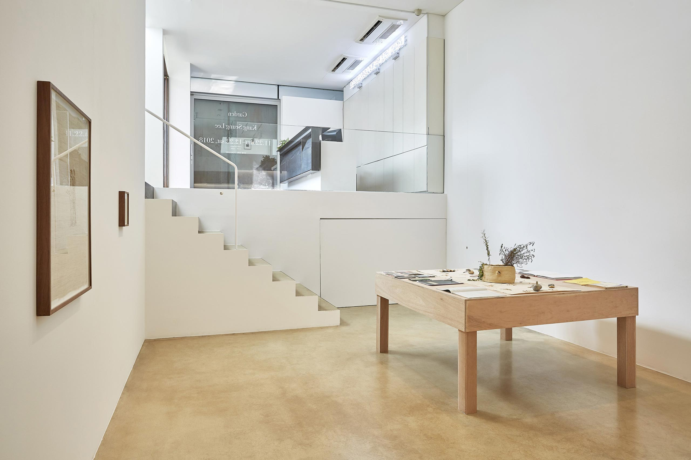

전시 보러 갈래? - 정은영과 함께 2
<
5. 커뮤니티적 감각을 안과 밖에서 나눌 때 (2)
정은영: 2021년에 열렸던 광주 비엔날레에서, 강승 씨가 벽면 전부에 퀴어 매거진을 붙이는 방식으로 아카이브를 보여주는 작업을 한 적이 있어요.
© KANG SEUNG LEE
이번 전시에서는 그때의 그 아카이브들이 <무제 (Table)> 위 자료집 안에 배치되어 있더라고요. 저는 그걸 한 페이지 한 페이지 넘기면서 ‘내가 속해 살았던 시대의 산물인 많은 인물과 많은 잡지들이 이렇게 박물이 되었구나.’라는 생각이 들었어요. (웃음) 예를 들면 거기에 게이 잡지 『GET』이 나오는데, 그 잡지를 만들었던 사람이 제 친한 친구였거든요. 그 친구도 죽었어요. 그런데 그 잡지의 표지에 있는 애들이 또 제 친구들이고, 그 이후를 넘기다 보면 『DUIRO』 같이 여러분들도 아시는 간행물이 나오는데요. 『DUIRO』를 시작했던 디자이너 중 한 명인 이도진 디자이너도 지금은 없죠. 근데 얘가 나보다 한참 뒤의 후배인 거야.

그러다 보니 그 잡지가 정말로 유산처럼 느껴지는 거예요. 그냥 자료일 뿐이라고 생각할 수 있지만, 그 자료를 만든 사람들이 이제는 없고 종이라는 물질로만 남아 있을 때 되게 묘하고 이상한 감각을 일으켜요. 시간이 흘러가면서 사람이 죽고 무엇인가 상실되면서 세계가 변하는 이 끊임없는 과정 속에서 (정말로) 소멸해 가는 어떤 역사들에 쌓인 먼지를 누군가가 털어내고 이렇게 예쁜 단상 위에 올려놓은 걸 봤을 때 복잡한 감정이 느껴지죠.
이 감각은 그냥 단순히 ‘뭐가 남았다’라거나 제가 여성국극 할머니들을 만났을 때 가졌던 느낌과는 또 달라요. 이게 비단 퀴어들만의 문제는 아닐 거고요. 어쨌든 간에 처음에는 모두가 돌봄을 필요로 하지만 나이를 계속 먹으면서 스스로 돌봄을 해나가는 시기를 맞고, 다른 사람들에게 돌봄을 해주게 되잖아요. 돌봄을 하고 나면, 돌봄을 받아야 되는 시기가 그다음에 바로 오거든요. 그 과정속에 계속 포함되는 거예요.
그래서 저는 퀴어들이 ‘퀴어문화축제’에 가는 것도 좋지만 축제, 혹은 ‘자긍심' 같은 언술 바깥에 배제된 것들이나 (더글라스 크림프가 쓴 것처럼) 애도 되지 못하고 남겨진 것에 직면할 필요성을 느껴요. 그곳에 웅크려진 굉장히 깊은 감정들이 있을 텐데 그것들이 작업으로 안 나오던 시기가 쭉 있었던 것 같고, 이제 그나마 강승 씨가 그 감정을 조금 건드렸다고 생각하기도 하고요.
제가 이렇게 생각하는 이유는 서로 세대가 비슷해서일 수도 있고 “LA”에서 온 “남자 게이”라는 더 좋은 발화의 위치도 있을 테지만, 어찌 됐든 그의 작업을 2018년 원앤제이 갤러리에서 열렸던 《Garden》에서 처음 봤을 때 그런 감정을 미세하게 느껴서, 삶이 반추되는 느낌이 일었었거든요.

*<무제 (Table)>의 캡션 정보는 《Garden》에서 사용된 버전을 사용했다.
*<무제 (정원)>의 캡션 정보는 《Garden》에 사용된 버전을 사용했다.

© KANG SEUNG LEE
그런데 오히려 한국 미술계에서는 “LA에서 온 이 남자 게이의 작품이 정말 섬세하고 아름답다, Bravo!” 이렇게 읽히는 거예요. ‘게이+섬세함’이라는 완전히 탈 정치화되고 탈 성애화된 상투적 등식. 특히 미술계에 평온하게 안착한 헤테로 작가들이 “너무 섬세해! 너무 예뻐! 너무 좋아!”와 같은 감탄을 반복할 때마다 느껴지는 그 거리감이 있잖아요.
또 강승 씨의 작업이 상업적으로도 굉장히 잘 받아들여지고 판매되기도 하는데요. 퀴어 유산이기도 한 이 작업을 구매해서 집에 걸어놓는 사람들을 생각하면 ‘구매자들은 어떤 감각을 소유하고 느끼겠다는 건가?’하는 질문이 남죠. 혹은 ‘작업의 맥락과는 상관없이 오브제들만 보겠다는 건가? 그렇다면 그 작업은 일반적인 인테리어 장식물과는 어떻게 다른가?’ 그런 생각도 당연히 들죠.
그러니까 우리 퀴어 창작자 입장에서는 조금 더 나가줬으면 좋겠는 그런 바람도 있고요. 너무 말끔한 미감으로 가꾸어 내놓는 톤앤 매너를 통해 ‘누가, 어떻게, 이 작업을 퀴어에 관한 이야기라고 볼 것인가?’ 하는 아쉬움도 동시에 생기니까요. 특정한 맥락을 아는지 혹은 모르는지에 따라 완전히 다른 해석의 지평이 열리는 점을 보여줬다는 측면에서 이강승이 작가로서 한국 미술 씬에 던져놓은 논쟁거리가 있다고도 저는 생각해요.
그리고 다른 작가들의 작업을 관람하며 이런 생각들을 복잡하게 하다가 결국 내 작업실로 돌아왔을 때 나 역시도 별반 다를 바 없는 모습을 반성적으로 보게 되죠.
재훈: 근데 한국에서의 전시는 대부분 말끔한 미감과 자명한 방법론으로 이루어진 파인 다이닝 같지 않나요? 굳이 이강승 작가의 전시에만 국한하지 않더라도요.
정은영: 그렇죠. 대부분의 작가는 미학적 성향이 조금 더 강하기 때문에 더욱 그럴 것 같고요. 근데 미술관에 가서 그렇게 잘 가꾸어지지 않은 작업도 꽤 보잖아요. 오히려 예쁜 것들을 보며 힐링하고 가려 하는데 작품들이 너무 더럽고 못생겨서 화날 때가 많지 않나요?
재훈: 더럽고 못생겨서라는 게 말 그대로 더럽고 못생겨서인가요? 아니면 비체?
정은영: 둘 다요.
재훈: 전시를 보며 감각적으로 쏘아붙여진다는 경험은 그렇게 많이 하지 못했어요. 예를 들어 저희 세대 대부분의 사람이 기억할 만큼 강한 인상을 남겼던 건 이미래 작가의 《캐리어즈》 정도? 그 밖에는 특별히 기억나지는 않네요.
정은영: 재훈 님의 그 의견은 어떤 특정 집단에게만 해당하는 것 아닐까요? 저희 각자에게는 가까이 관계 맺는 여러 사람이 있지만 그 집단에 속해있지 않은 감상자들 역시 있잖아요.
재훈: 그렇지 않은 감상자들이라고 하신다면...?
정은영: 예를 들면 재훈 님과 비슷한 세대의 미술 애호가나 감상자들이 있겠죠. 또 한 켠에는 인플루언서나 연예인이 보는 전시를 따라다니는 대중 감상자들이 있을 테고요. 정말 아름답고 상업적인 작품들만 즐겨보는 감상자도 무척 많잖아요. 그래서 요즘 미술관이 엄청 핫하다면서요? 사람들이 영화관에는 안 가도 미술관에는 줄을 서고요. 여기서 재훈 님이 말하는 ‘우리 세대에 기억에 남을 만한 전시가 딱히 없다’에 고개를 끄덕이는 그 감상자들은 미술대학 주변에 기거하면서 딱 서울을 중심으로 활동하는 사람들 아닌가요?
재훈: ... 그렇죠.
정은영: 그런데 서울이 아닌 지역에서도 미술대학 학생들이 매년 엄청 많이 졸업하고, 서울의 미술대학만 하더라도 학교마다 성향이 되게 다르거든요. 제가 매 학기 서울에서만 서너 군데씩 학교 강의를 뛰는데, 학교의 분위기에 따라, 좋아하는 전시나 작가나 관심사가 다 달라요.
예를 들어 미술 현장에 좀 더 가까이 접근할 기회가 많은 한예종 학생들의 경우에는 대체로 이미래 작가를 너무 좋아하고, 따라하고 싶어 하기도 해요. 학생들의 레퍼런스로 자주 등장하고요. 근데, 좀 보수적이고 아카데믹한 여타 종합 대학 학생들은 크게 관심 있어 하지 않더라고요. 일단 잘 모르기도 하고. 오히려 중요한 작가다, 봐야한다 강조해야 마지못해 가서 보기도 하고.
역으로 트위터나 릴스, 숏츠에서 흥해서 학생들은 다 봤는데 저만 못 봐서 뒤늦게 합류해 찾아보고 나서야 이야기를 나눌 수 있게 되는 상황도 많아요. 각 집단들마다 선호하고 애호하고 신뢰하는 목소리들이 여기저기 나뉘어 있는 거죠. 만장일치로 최고인 무언가는 이제 아마도 없을 것 같아요. 다 해석의 문제겠죠.
재훈: 제 또래의 현대미술 감상자 중에서도 관객층이 그렇게 나뉘어 있을 줄은 몰랐네요. 왜 그렇지?
정은영: 같이 대화를 나누는 사람들이 유사한 취향이나 의미를 지향하는 편이지 않을까요?
재훈: 근데 그 친구들과의 단톡방에 무언가를 보내면 반응이 없어요. 그렇지 않나요? 우프라고 해서 모든 관심사를 공유하지는 않잖아요.
지영: 그렇죠.
정은영: 다 그렇죠. 저희도 그래요.
상운: 그게 그나마, 최선으로, 무엇을 보고 그것을 나누길 좋아하는 사람들의 모임이 아닐까요. 그만큼 격차가 엄청 클 수도 있다는 뜻일 수도 있어요.
재훈: 그것조차 소중한 거였네요.
정은영: 소중하죠. 정말 한 줌이에요. 아무리 엄청 유명한 작가라고 해도 우리만 알지 밖에 나가면 아무도 모르죠.
재훈: 한국에서 현대 예술을 공부하거나 활동하는 사람이 부모님에게 가서 “내가 이런 성취를 했어!”라고 했을 때 돌아오는 건 무반응 혹은 “그래서 진짜 직업은 언제 가질 거니?”라는 질문이잖아요. 근데 같은 소식을 친구들에게 자랑하면 박수 짝짝짝 쳐준단 말이죠.
정은영: 그렇게 여기서 못 떠나게 되는 거죠. (웃음)
재훈: 서로의 활동이 아주 잠시 의미 있게 되는 그 공감대를 커뮤니티적 감각으로 불러볼 수 있겠네요.
상운: 그러네요. 그게 그 감각이었네요. 인스타그램에 컨아밈@contemporary_arts_meme 같은 계정을 보면 특정 작가를 언급하면서 농담하잖아요. 그것도 결국에는 이해하는 사람만이 웃을 수 있는 유머들인 것처럼요.
정은영: 실제로 그 밑에 댓글 창을 보면 이게 무슨 의미인지 알려달라고 하는 사람들이 많잖아요. 그리고 대다수의 지역 미술대학은 서울의 미술계에서 무슨 일이 벌어지고 있는지 잘 모르는 경우가 진짜 많아요. 저도 매번 서울에서만 학생을 만나니까 그 외 지역의 미술계에 관해서는 잘 모르다가, 어떤 계기로 지역 미술관에 가게 될 때 ‘이걸 물어본다고?’하는 느낌을 가끔 받거든요? 그것만 봐도 각자의 그룹이 얼마나 한 줌이며, 많이 다른지를 알 수 있죠. 이 전시도 국립현대미술관에서 하니까 그나마 회자될 수 있는 거잖아요.
돌아가신 저희 아버지가 독문학자인데도 불구하고 제가 계속 작업하고 있다는 사실을 의식하거나, 인정하거나, 재밌어 한 적이 한 번도 없으세요. 밖에서 “그 집 딸은 뭐 해?” 이러면 “뭐 그냥 대학에서 수업하고 그래." 이런 식으로 말하시며 무얼 하는지는 숨기더라고요. 그런 아버지가 처음으로 사람들에게 “우리 딸이 미술 작가다!”라고 아웃하면서 사람들을 전시장에 데려온 게 제가 《올해의 작가상》 전시를 했던 때였어요. 왜냐하면 이건 “국립” 현대미술관이니까.
근데 사실 저 그전에도 에르메스 재단 미술상이나 신도리코 미술상 같이 큼직큼직한 수상은 다 했거든요? 하지만 아버지의 머릿속에서는 그 중 아무것도 작가 됨의 지표가 아닌 거예요. 그러다가 ‘국립현대미술관’을 보는 순간 아버지가 태세 전환을 완벽하게 하셨었죠. (웃음) 《올해의 작가상》이 진행되는 서너 달 동안 당신 삶의 약속을 다 국립현대미술관에서 잡는 거예요. 그만큼 대중적인 비미술인 감상자들에게 ‘제도의 권위'는 하나의 상징적 자본으로 엄청난 분기점이 되기도 해요. 그래서 이 전시에서 무엇을 보여주고 무엇을 얻어갈 건지는 굉장히 전략적인 부분이라는 생각도 들고, 각자의 의미를 선택해야 하는 문제인 것 같아요.
상운: 저는 올해의 작가상을 처음 본 게 2018년도였어요. 같은 동네 인근에 있는 고등학교에 다녔기 때문에 석식 시간이 끝나기 전에 빨리 보고 학교로 다시 들어가려고 했거든요. 어떤 작업이 있었는지 정확하게 기억나는 것은 아니지만 그냥 하나 남은 건, ‘현대미술이 이런 거구나. 이런 감각이구나. 이렇게 하는 것이구나.’였어요. 당시에는 제가 미대에 갈 거라고 생각도 못 했는데, 그런 사람에게도 어떤 프레임을 만들어줄 만큼의 권위를 갖고 있으니까요.
정은영: 그래도 같은 고등학교에 다녔어도 그걸 보러 가는 사람과 안 보는 사람이 또 나뉘잖아요. 그렇기 때문에 모두가 무언가를 공통적으로 알 수 있다고 생각하기 힘들죠.
재훈: 한국 사회에서 현대 미술의 존재가 거의 없죠.
정은영: 그렇죠. 거의 없어요. 저 되게 많이 경험하거든요. 심지어 대학교수 임용면접 같은데 가면, 비미술인 총장들이 “왜 네이버에 이름 검색해도 안 나와요?”, “ 한국 미술계에서 본인이 몇 위쯤이라고 생각합니까?” 이런 무지성의 질문을 부끄럼 없이 한다니까요. 네이버에 검색해서 나오는 유명인인지 아닌지 혹은 대중적으로 유명한 것들과 연루되어 있는지 아닌지로만 작가나 작업을 판별하는 거죠. ‘올해의 작가상’이니, ‘베니스 비엔날레'니 그런 거 다 소용 없더라고요. 그런 관점에서 봤을 때 미술은 접근 자체가 대중적으로는 여전히 힘들다는 면에서 마이너한 장르가 아닐까요.
6. 퀴어/예술 작품이 대중 문화/제도의 노른자에 진입할 때
정은영: 제가 여성국극에 관한 작업을 거의 20년 가깝게 했어요. 그렇게 열심히 오래 작업을 했는데도 여성국극의 대중적 인지도는 크게 달라지지 않았다고 느껴요.그런데 여성국극을 소재로 한 웹툰 <정년이>가 나오니까 대중의 태세가 완전히 바뀌었고, 이제 곧 드라마가 나오면 또 한 차례 분위기가 바뀌겠죠. 미술이 아무리 많은 것을 새롭게 제안해도 결국은 독자의 수나 충성도가 높은 대중 문화가 가장 눈에 띄게 되는 것이죠. 미디어에 자주 노출되고, 자본과 직결되는 분야이기도 하고요.
그래서 저는 미술이 기본적으로 시각 예술인데도 불구하고 그 대상의 가시화에 이렇게나 역량을 보이기 힘들다면, 태도나 관념이 되게 중요한 장르인 것 같은데, 그렇다고 했을 때 ‘우리가 이것을 얼마나 더 소중하게 다루는 것이 좋을까?’라는 고민을 하게 되요.
재훈: 소중하게 다룬다는 게 어떤 의미인가요?
정은영: 작가는 대상에 접근하는 관점이 저마다 다르잖아요. 예를 들어 ‘퀴어 커뮤니티'라는 단어와 관련한 중요한 안건이 무엇인지를 생각해 볼 때 요 근래 대다수의 사람들은 ‘퀴어 결혼’이나 ‘퀴어들이 얼마나 많은 돈을 벌 수 있을 것인가?’ 등을 쉽게 떠올리죠. 그에 반해 저나 강승 씨가 ‘퀴어 커뮤니티'라는 단어에 도달하는 접근 및 관점은 비교적 네거티브한 역사나 정서로부터 시작해요. 비교적 사람들이 좋아하는 이야기는 아니죠. 퀴어 프라이드에서 꽃피는 행복함은 모두가 좋아하지만, 우울한 게이나 공격적인 레즈비언을 싫어하는 것처럼요. 그래서 저는 지난 분기 동안 풍자라는 인물에 관해서 정말 너무너무 연구해 보고 싶었어요.
재훈: 만나 보셔야겠네요. (웃음)
정은영: 그녀가 정말 한없이 궁금해요. 이렇게나 혐오적인 사회 안에서 풍자가 등판하면 트랜스가 뭔지는 알까 싶은 아줌마들조차 즐거워 하잖아요. 트랜스젠더를 이해하고 저러는 거면 진짜 한국 너무 좋은 나라 아닌가 싶으면서 너무 흥미로운 거예요. (웃음) 아주 중요한 인물 같아요.
지영: 작년에 ‘상실 사진'이라는 프로젝트에서 사진 작업을 발표했는데 사람들이 제 순서 끝나고 나서 풍자에 대해서 어떻게 생각하는지를 물어보더라고요.
정은영: 너무나 가시적이면서도 사랑받는 인물이잖아요.
재훈: 사람들이 풍자를 볼 때는 그녀가 퀴어라는 사실을 어디 외딴곳에 있는 주머니에 집어넣고서 보는데, 이게 어떻게 해서 가능한 것인지는 모르겠네요. 홍석천을 볼 때는 그를 그의 정체성과 딱 붙여서 보잖아요.
정은영: 미술계에서도 마찬가지죠. 메이저리그에 끼워줬던 케이스들은 퀴어 예술의 약간씩 다른 이미지를 통해 다양한 이야기를 더 할 수 있는 정도의 선이었겠지요. 근데 지금은 퀴어라는 말을 가감 없이 많이 한다는 생각이 들어요. 특히 젊은 작가들에게는 퀴어가 하나의 중요한 소재가 되어버린 경우도 아주 많고요. 저는 이게 되게 큰 변화라고 느끼거든요.
재훈: 아까 말씀하신 ‘퀴어인 나가 중요하다’는 표현을 듣고서, 저 자신도 작업의 강조점을 편리하게 ‘퀴어인 나'에 두곤 한다는 생각이 들었어요. 많이 보이니까 나도 하고 싶다는 마음이 자연스레 들고요.
상운: 같은 생각으로, 원래는 제 작업에 일부러 지향성이 안 나오게 하려고 했거든요. 왜냐하면 지금 얘기할 맥락이 없는데, 굳이 끌고 와서 소재화하는 것처럼 보일까 봐요. 근데 이제 이후에 계속 작업을 하다 보니까, ‘나도 몰랐지만 이미 작업에 큰 영향을 끼치고 있었구나’하고 생각했어요. 방금 재훈 말마따나, 그걸 왜 그때는 그렇게 막아내려고 했나 생각했죠.
재훈: 근데 ‘퀴어인 나’를 부각하는 전략이나, 다른 작가 혹은 그들의 창작물을 자신의 개인전에 포함해 보여주는 전략 자체가 문제는 아니잖아요. 전시를 봤을 때 그 선택 밖의 나머지는 보이지 않아 앙상함을 느낄 때가 슬픈 대목이죠.
정은영: 그렇죠. 그런 작업이 많다고 동의하는데, 팔은 또 안으로 굽는다고... 그것 역시 작가로서 불가피한 선택일 수도 있겠다는 생각을 항상 해요. 빠르게 재단할 수 없는 부분들은 늘 있으니까요.
지영: 저는 미술 작가가 돼야겠다고 생각을 한 적이 없어서 미술과는 약간의 거리감이 느껴져요. 스스로를 미술 작가라고 생각하기보단, 사진 작가라고 생각하기도 하고요. 하여튼 어느 시기에는 사진 작가들 역시 퀴어나 여성이라는 정체성을 앞세워 작업을 했었는데요. 저도 그쯤 보스토크에서 <물의 시간들>을 발표 했어요. 당시에는 주변이 어떤 흐름으로 가고 있다는 걸 잘 몰랐지만요. 물론 그때 성폭력과 관련한 여러 가지 논의들, 피해자성 그리고 여성, 퀴어 등이 계속 화두였었기 때문에 저도 영향을 받았겠죠.
그때쯤에 발표를 했기 때문에 시류에서 딱 낚아채진 느낌이었고, 그때 ‘내가 내 작업을 이런 언어로 소개해야 사람들이 알아먹는구나’를 어렴풋이 깨달았어요. 그전에 설명할 때는 “잘 모르겠지만 이렇게 느꼈는데요.”라고 말했다면 공적인 자리에서는 특정한 단어들을
정은영: 직접적으로 입에 올려야만
지영: 알아듣는다. ‘퀴어의 사랑과 몸의 폭력성, 물을 메타포로’ 이런 식으로. 근데 그런 설명과 나의 작업 사이에 괴리감이 너무 크다고 느꼈어요. 그 몇 개의 단어들은 커다란 뭉치에서 낚아 쳐진 말들 같았거든요.
재훈: 대부분의 사람이 작업의 내실을 열심히 들여다보지 않는 분위기잖아요.
지영: 내실을?
재훈: 언어로 된 설명이 아닌 작업의 진짜 내용.
정은영: 보기가 힘들지.
지영: 그 당시 보스토크 도킹 프로그램에서는 한 8명 정도의 작가가 발표를 했어요. 근데 그때 제가 배움을 받고 있던 작가분이 어떤 식으로 발표를 하면 좋다고 조언을 해주셨어요.
정은영: 지도를 받고 갔구나.
지영: 저는 그 조언에 따른 언어나 설명이 진짜인 줄 알았어요. 그 설명이 ‘이렇게 말해야 한다’라는 가이드라인이 아니라 제 작업 그 자체라고 생각하면서, 그 언어들을 빌려 발표했던 거죠. 근데 사실은 그게 아니라 그 언어를 배워야만 그 씬 안으로 진입할 수 있었던 거고, 그 시기에 저는 그 언어를 배운 거예요. 그 씬 안에 있는 사람들은 내가 그 언어로 입장을 했으니 그 언어로 나를 보는 거고요. 그렇게 다른 곳들에서도 저를 그 언어로 부르고... 그랬을 때 새어 나오는 다른 이야기들이 없어지는 거죠. 내실을 보기가 어려운 이유가 그런 것 같아요.
재훈: 그래서 기분이 어땠어요?
지영: 기분은 아직 모르겠어요. 다만 빨리 소진되지 않으려면 그 단어를 내 작업 그 자체라고 착각하지 말아야겠다. 그것은 그 씬에서 설명을 할 때 쓰이는 단어고, 필요하죠.
정은영: 업계 언어.
지영: 소통이 돼야 되니까. 그렇기 때문에 소통을 위해서는 특정한 단어들이 필요한데 그것이 전부는 아니죠.
정은영: 프레젠테이션 형식으로 발표하는 자리에서 작가가 자신의 작업을 길게 회고할 수 없잖아요. 제한된 5분, 10분 안에 다 설명해 줘야 되다 보니까 그 업계 언어가 당연히 중요하죠.
지영: ‘다른 애들은 학교에서 이걸 배우나?’ 하는 생각이 들어요.
정은영: 한예종처럼 초점이 예술에 있는 학교에서는 그 언어를 계속해서 교육하다 보니 빠르게 배우고 무비판적으로 흡수하는 경우도 많은 듯해요.
지영: 그 단어로 설명되는 몇 가지 부분으로 작업이 전부 이야기될 수 있다면, 사실 작업을 직접 가서 볼 필요가 없다고 느껴요. 전시를 한다는 것은 어떤 단어로도 다 설명할 수 없는 무언가를 위해서 그 공간을 점유하는 거니까요.
재훈: 사실 그러려고 시간 내서 전시 보러 가는 거죠.
정은영: 전시를 보고 난 후 이렇게 길게 이야기하는 프로그램을 만든 이유도 같지 않나요? 다들 첫 느낌, 인상 비평적으로만 말하게 되니까.
재훈: 네, 본 내용에 관해 이야기하는 일이 가치 있다는 믿음이 하루에 하나에서 발행하는 리뷰의 전제이죠. 저도 그렇지만, 한국에서 미술하는 사람들은 검은 옷만 입고 점잖잖아요. 하지만 그중에서도 미술에 진지한 사람이 많다는 걸 알기 때문에 공감하며 읽으시는 분들이 더 반응하고, 동참했으면 좋겠어요.
7. (예술) 학교
정은영: 저는 작가들이 항상 어떤 선택을 할 수밖에 없다고 생각해요. 업계 언어의 제한적인 면과 같이, 제도적인 차원의 문제들이 늘 도사리고 있으니까요. 저 역시도 너무 구린 걸 알지만 어떤 선택을 해야만 되는 순간들이 있었어요. 지금 와서 돌아보면 창피하지만, 사실 그때로 돌아가면 결국은 다시 그 선택을 했을 것 같거든요. 그래서 이런 환경에서는 우리가 하고 싶은 얘기를 충분히 하지 못하더라도 지속하고, 기회를 쥔 채로 앞으로 나가는 게 늘 더 중요하다는 믿음에 매달렸어요.
지영: 포획되지 못한 것은 다행이다. 근데 이제 포획됐을 때 어떻게 내가 해낼 것이냐가 문제다. 그러니까 요즘에는 실패하는 일이나 빠르게 보일 수 없다는 점이 너무 당연하다고 생각하는데, 만약에 다른 사람들에게 보이기 시작했을 때 어떻게 할 것이냐가 새로이 시작될 고민일 것 같아요.
재훈: 저는 이번에 차연서 작가의 《꽃다발은 아직》(상업화랑 을지로)를 보면서 비슷한 생각을 많이 했었어요. 그 이전 전시였던 《모텔전: 눈 뜨고 꾸는 꿈》[4]에서는 《꽃다발은 아직》의 만화 드로잉과 《혀 달린 비》(아트선재센터)의 <축제> 시리즈가 같이 전시돼 있었거든요. 점묘화에 가까운 만화 드로잉으로부터 출발해 지영의 흑백 사진 <나무>로 이어지는 시퀀스를 보며 감탄했어요. 그 건너편 벽면에 있던 <축제> 시리즈 역시 비범하다고 느꼈고요.
© 차연서
그 후 ‘이다음에는 전시를 어떻게 하실까?’ 기대했었는데 《꽃다발은 아직》을 보고 조금 아쉬웠어요. 만화 드로잉과 그 직사각형 프레임의 형태감을 살려 공간에 시적인 뉘앙스로 접근하려 했던 선택이 상업화랑 을지로라는 공간의 드넓은 터프함과 잘 결합한 것인지 모호했거든요. 그래서 《혀 달린 비》를 보고 싶었어요.
정은영: 저는 학교에서 차연서 작가가 작업하는 모습을 1년 이상 봐왔는데도 불구하고 그 작가가 그런 드로잉을 할 수 있다는 생각을 한 번도 해본 적이 없었어요. 오히려 학교에서는 드로잉을 보여준 적이 없었고 퍼포머티브한 작업들을 주로 해왔거든요. 그런데 저는 《모텔전》에서 그 작업들을 보고 작가의 머릿속이 그려지면서, 가능성이 정말 엄청난 작업이라고 생각했어요. 이후에는 이 작업들이 어떻게 더 가지를 뻗어나갈지 궁금하고요.
재훈: 학교에서 볼 때는 몰랐는데 나중에 작가로서 활동하다 보니 그 언어가 더 선명해지는 경우를 보면 어떠세요?
정은영: ‘학교는 하등 쓸모가 없구나.’ 이런 생각을 하죠. (웃음) 적어도 함께 보냈던 한 학기, 많게는 4년까지의 시간이 적어도 그냥 버리게 되는 시간이 아니었으면 좋겠다는 정도의 기대를 해요.
지영: 학교 다니는 동안 엄청 고역이었는데, 그래도 메리트라고 생각하는 것이 하나 있어요. 저는 제 주변에는 예술에 관심 있는 사람이 한 명도 없었거든요. 그런데 학교에 들어가니까 모두가 다 엄청 쓸모없는
정은영: 예술만 하고 있어요.
지영: 네, 무대를 엄청 열심히 만들었다가 공연이 끝나면 다 갖다 버려요. 하등 쓸데없고 금방 버려질 건데 온 힘을 다해서 뭔가를 만들고 있는 곳이죠. 무용한 만들기를 하고 무용한 생각을 하는 일이 학교에 들어왔다는 이유만으로 그 속에서 보호받고 있는 거예요. 교수님들도, 친구들도 다 그러고 있으니까, 그 생각을 할 수 있는 환경을 받는 거죠.
재훈: 예술이라는 가치에 공감하고 동의하는 몇 안 되는 공적 집단이잖아요.
상운: 학교가 남기는 게 딱 그거. 제일 큰 것 같아요.
정은영: 근데 어떤 시기 동안 학교가 굉장히 안전하지 못한 곳으로 이해되기도 하면서 그 역할을 못 하기도 했잖아요.
지영: 항상 그렇지 않나요?
정은영: 대학의 권위가 유독 힘을 가지게 되는 어떤 분기점이 있다고 느껴요. 서울 수도권 소재의 어떤 대학 정도를 나오지 못하면 미술계에서 활동을 시작하는 것조차가 너무 어렵다든가 하는 식으로요. 과거에는 재능 중심의 사회 같은 분위기가 더 강해서 재능을 꽃피우는 사람이 있다면 그가 무학이어도 상관없다는 신화적인 생각을 모두가 했었기도 했는데 지금은 어느 학교 출신인지를 먼저 보는 분위기가 더 강해지고 있다는 생각도 드네요.
지영: 강한 것 같아요.
정은영: 요즘뿐만이 아니라 한 90년대 말부터 계속 그렇게 진행되어 오지 않았나 싶네요.
지영: 저는 약간 충격적인 게, 어떤 자리에 가서 퀴어 미술에 관해 이야기를 하고 집에 돌아갈 때쯤 되면 뭔가 씁쓸한 거예요. 알고 보니 모두가 서울대나 한예종, 대학원, 아니면 좋은 외국 대학을 나온 거죠. 그 사이에 있다 보면 ‘우프라는 팀을 만들지 않았으면 작업을 당연히 못 했겠다. 했어도 발표를 못 했겠다.’는 생각을 하게 돼요.
우프 친구들이나 주변에 사진 찍던 친구들 대부분 스냅 촬영이 한창 유행할 때 인스타그램으로 만나게 된 친구들이에요. 사진 작가나 모델의 관계로요. 저희는 황예지, 이옥토, 렌항 이런 인스타그램 기반으로 활동하는 사진 작가들을 보면서 자랐죠. 그래서 물리적인 공간이 우리의 사진에게 필요하다고 느낄 때 미술관보단 모텔에서 먼저 전시를 하는게 자연스러웠던 것 같아요. 미술하는 친구들은 작년부터 알게 되었는데, 이야기를 나누다 보니 ‘얘네는 완전히 다른 시각을 가지고 있다.’ 전시를 볼 때나 사고할 때 전혀 다른 체계를 가지고 있다는 걸 깨달았어요.
8. 사회 운동과 이론의 접면 -> 몸으로 이론하기
재훈: 제 주변에서 미술이나 사진하는 사람들 중 지영처럼 전시 안 본다고 당당하게 말하는 사람들 거의 없어요. 우프의 다른 팀원들과 같이 이야기를 나누면서도 ‘예술관이 엄청 다르다구나’라고 여러 번 생각했고요.
정은영: 그래서 좋은 경험이었나요? 아니면 이상했나요?
재훈: 반가웠던 점도 있고 의아했던 점도 있었는데요. 뭉뚱그려 말해보면 훨씬 무모하다고 느꼈어요. 자기 활동에 관한 언어가 먼저 있다기보다는, 일단 몸통 박치기를 먼저 하고 보는 팀이라는 인상. 그 후 다른 사람들이 그 박치기에 대해 ‘이번에는 잘 박쳤네, 이번 것은 요런 레퍼런스랑 같이 봐보면 더 잘 이해할 수 있겠네.’라고 언어를 붙여주면 그다음 활동에서 그 언어를 입고 나타나는 거죠. ‘우리의 지난 활동은 사실 이런 거였어~’ 이런 식으로. 사실 이 방식이 예술가의 정석적인 방법이라고 생각하는데, 한국에서 현대 미술하는 젊은 사람들은 거꾸로죠. 몸통 박치기를 안 할 때도 많고요. 그런 면을 좋게 보고 있어요.
《모텔전》은 어떻게 보셨나요?
정은영: 흥미롭게 봤어요. 가성비와 효율성을 추구하는 지금의 경향 속에서 ‘이렇게 무모하게 일을 벌리는 집단이 있는가’ 감탄했죠. 정말 딱 하룻밤만 열고 닫기 때문에 그날 가지 않으면 아예 볼 수 없는 전시가 되는 것인데, 그러한 시도가 지금 미술계에 필요하지 않을까 하는 생각이 들었어요. 또 그 전시의 내용이 ‘젊은 친구들이 재미있게 치기 어린 놀이를 하네?’ 이런 느낌이 전혀 아니잖아요. 우리 시절에는 경제가 너무 좋을 때라 젊은 작가들이 모여서 한 판 확 노는 게 비규범적이고 저항적인 미덕으로 여겨지기도 했거든요. 그런데 ‘이렇게 어두운 이야기로, 이 정도 규모의 전시를 한다고?’ 싶어 놀라웠어요. 기획력이나 조직력, 추진력 모두.
그리고 제가 요즘 ‘퀴어 미술이란 무엇인가’에 관해 자주 생각하고 있거든요. 과거에는 한없이 천대받았다가, 갑자기 힙했다가, 모두에게 무시당하다가, 갑자기 물어보지도 않는데 자기가 퀴어라고 소개하는 현상이 눈앞에서 벌어지고 있다 보니 ‘퀴어 미술이 도대체 무엇을 어디까지 설명해 낼 수 있지?’ 싶은 의문이 들더라고요. 그래서 우프가 퀴어 관점에서 그렇게 어둡고 거론하기 힘든 이야기들을 동시다발로 풀어놓는 것도 되게 이상하다고 느꼈어요.
재훈: 《모텔전》에서 이어지는 활동으로 우프가 책 『Without Frame! Vol.3: 모텔전, 눈 뜨고 꾸는 꿈』을 발행했잖아요. 저는 이번 책에 성매매해방운동 주홍빛 연대 차차(이하 ‘차차')를 필진으로 삼은 선택 역시 중요하다고 느꼈어요. 혹시 그 선택에 관해 이야기해 줄 수 있을까요?
지영: 일단은 우프가 차차에 촬영 지원을 3년 정도 나갔는데요. 일 년 정도 차차와 자작나무회가 주최하는, 파주 용주골에 위치한 성매매 업소 집결지 폐쇄에 반대하는 시위에 사진을 찍으러 나가고 있었어요. 그 시위에서 성노동자들이 거주하거나 노동하는 건물이 부서지는 장면을 봤고, 조금만 힘을 가해도 그 안의 내장들이 다 터져 나오는 간이 집을 보면서 그 건물이 우리가 세우고 싶은 건물의 모양이랑 비슷하다고 생각했어요.
《모텔전》을 하고 나서 그 전시에 관련된 책을 구상했던 때에 책 자체가 건물이었으면 좋겠다는 생각을 계속 가지고 있었거든요. 용주골의 집들을 보면서 책의 생김새를 구체화했던 것 같아요. 그러려면 용주골 사진도 들어와야 되고 용주골에 대해서 쓰인 글도 들어와야 했어요. 사실 차차가 깔아놓은 판 위에서 우리는 사진을 찍는 거니까 차차 활동가분들의 이야기도 당연히 들어와야 된다고 생각했고요. 그렇게 차차를 섭외하고 그동안 찍었던 사진들을 정리한 거예요.
재훈: 차차에 촬영 지원을 나가기 시작했던 이유는 뭐예요?
지영: 그 일화는 이번 3호에 실린 예인의 글에 상세하게 나와 있지만, 저 개인적으로는 그냥 그때 시위 사진 찍는 걸 좋아했어요. 시위 가면 기분이 좋아지고 또 엄청나게 많은 사람을 찍을 기회인 거고, 행진하면서 눈이 오고 노랫소리 들리고 이러면 그것들에 맞춰서 사진을 찍는 느낌이 엄청 좋았어요. 그래서 여러 군데를 찾아다녔고 차차 시위에는 예인이 같이 가자고 해서 처음 가게 되었어요. 어떤 시위에서는 ‘저건 아니지 않나?’ 싶은 말들을 하고 들으면서 기분이 나빠지는데 차차에 갈 때는, 그 사람들이 말하고 울 때는 항상 뭐라 표현할 수 없는 뭔가를 느껴요. 그래서 꽤 자주 나가게 되는 것 같아요.
재훈: 트위터에 용주골 시위 소식을 계속해서 올리는 ‘NPMS(나쁜멜솹)’이라는 계정이 있어요. “시위 중인데 경찰들이 철거 차를 가지고 와서 막무가내로 우리 건물을 부수고 있다. 지금 사람이 아파트 3층 높이 전봇대에 매달려서 지키고 있는데도 무지막지로 들어온다.” 이런 내용을 계속해서 올리시거든요? 도대체 어떻게 반응해야 될지 모르겠을 정도로 지금 시대의 상식으로는 이해될 수 없는 일들이 용주골에서 벌어지고 있는데 사람들이 정말 관심 없어 해요.
마찬가지로 퀴어를 둘러싼 여러 이야기 중에서 ‘힙’이라는 키워드로 말해지는 퀴어가 있다면 그 정반대 편에는 정말 이야기되지 않는 퀴어 역시 있잖아요. 어떤 부분은 과도하게 이야기 되는 반면 그 반대급부는 정말 조명되지 않는다는 생각이 드네요. 『여/성 이론 49호』에 차차 활동가 유원이 기고했던 「노 프라이드 파티 기획단 중 한 명의 개인적이고도 정치적인 노 프라이드 파티 후기」를 읽으면서 절절하게 느꼈어요.
정은영: 그게 더글라스 크림프가 에이즈 시대의 미술을 얘기해야 한다고 주장했던 가장 큰 이유이기도 했었죠. 근데 용주골 시위에 나가서 촬영하는 일은 이론을 먼저 접하고 하는 건 아니죠? 그냥 활동하고 나서 언어를 찾아나가는 거죠?
지영: 촬영은 항상 정리되지 않을 때 먼저 해요. 뭔지 모르겠어서 촬영하는 것에 가까우니까. 그런데 동시에 책을 읽고 있어서 그게 섞였을 수도 있죠. 뭐가 먼저인지는 잘 모르겠지만 이런 건 있죠. 읽어야 말할 수 있는 것들, 이를테면 저는 성매매하는 여성들을 페티시적으로 좋아해요. 근데 그동안은 이 사실을 똑바로 말할 수가 없었어요. 말을 해도 되는지 몰랐기 때문에.
그러니까 어떤 사람은 고층 건물들 사진을 막 찍잖아요. 그 이유가 ‘멋있어서’일 거 아니에요? 제가 차차에 촬영 지원을 나가는 이유도 그 고층 건물을 찍는 사람과 최초의 동기는 비슷한 것 같아요. 거기 있는 분들과 그곳이 멋있어서. 근데 이렇게 말하는 것도 관련해서 공부를 해야 말을 할 수 있더라고요. ‘내가 이걸 페티시적으로 좋아한다’라는 말도 어떤 작가분이 말씀하신 걸 접한 이후에 ‘이거 말해도 되는 거구나’라고 배우는 거죠.
정은영: 실제로 사라 아메드가 『페미니스트로 살아가기』라는 책의 서문에서 아예 건축에 빗댄 말을 하거든요. 기존에 검증된 백인 남자들의 언어를 빌려오면 이론을 견고하게 증축하기가 너무 쉽고 빠르지만 자기는 그걸 하지 않겠다고 말해요. 이게 지푸라기로 지어 쓰러지기 쉬운 집이 될 수 있을지라도 그렇게 하겠다고 선언하거든요. 방금 지영 님이 한 말이 그 말과 굉장히 유사해서, 흡사 그 책을 읽고 이야기한 건가 싶었어요. 또한 몸의 경험에 기반하는 관점들이 페미니즘 미술에서 굉장히 많이 출현했던 이론과 실천의 관점이자 방법론이잖아요.
사실 저도 주디스 버틀러를 수차 읽었지만 그게 처음부터 몸에 와 닿은 건 아니에요. 여성국극 배우 선생님들을 만나면서 확 달라진 거죠. 버틀러가 누군지도 모르는 할머니들이 일생에 걸쳐 온몸으로 그 이론을 구현하면서 살았다는 사실을 이해하자마자 버틀러의 이론이 제 머릿속에서 체계를 잡기 시작했어요. 동시에 그때 느낀 무언가가 나를 계속해서 수행적으로 만들고 있다는 느낌이 들곤 하는데, 그 일련의 쾌락이 나로 하여금 수행성을 기반으로 한 작업을 놓지 못하게 만들어요. 그래서 지영 작가님 안의 많은 것들이 얼개를 되게 단단히 짜가고 있다는 느낌이 들었어요.
제가 이제 일어나야 될 시간이라... 마무리 발언을 부탁해도 될까요? (웃음)
재훈: 네! 오늘도 전시 감상 나눔이 성황리에 마무리되었는데요. 대화 초반에는 이 전시에 대한 각자의 감상을 이야기했었고, 그다음으로는 조사 연구를 기반으로 하는 동시대 미술의 방법론의 한계와 어쩔 수 없음을 짚어봤어요. 그 후로는 예술과 커뮤니티적 감각의 관계와 시대의 변화에 따른 커뮤니티적 감각의 변화, 그리고 몸을 통해 얻는 지식으로 이론하기까지, 정말 종합선물 세트와 같은 대화였네요~ ^^
오늘의 알찬 구성처럼 모두 알찬 하루 보내셨으면 좋겠고요. 오늘의 대화는 이걸로 마치겠습니다!
일동: 수고하셨습니다~